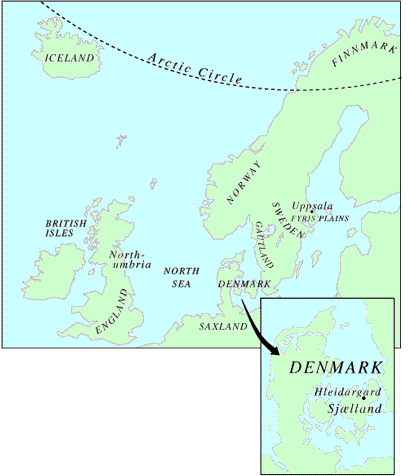

THE
WORLD OF
THE SAGA OF KING HROLF KRAKI

Centered in Denmark,
the action of the saga spreads over most of Scandinavia and
a large area of Northern Europe. This map names some of the
major lands and seas while locating the following sites and
kingdoms:
England: King Nordri, father of Ogn the wife of Hroar,
ruled over part of England.
Denmark:
Kingdom of Hrolf, ruled from his stronghold at Hleidargard.
Early in the saga, Halfdan rules Denmark until deposed by
his jealous brother Frodi. Halfdan's son Helgi recovers the
kingship and rules until slain. He is succeeded by his son
Hrolf.
Finnmark:
The home of Hvit in far northern Scandinavia.
Fyris Plains:
Plains in Sweden, located south of Uppsala. Hrolf scatters
gold on the Fyris Plains, distracting the pursuing forces
of King Adils.
Gautland:
The kingdom of Bodvar Bjarki´s brother, Thorir Hound's
Foot. Located in southwestern Sweden.
Hleidargard:
King Hrolf's royal seat, located on the central island of
Sjælland. Today, the modern town of Lejre near Roskilde
(Hroar's Spring).
Northumberland:
The kingdom of Hroar, Halfdan's son, located in northeastern
England.
Saxland:
The kingdom of Queen Olof, mother of Yrsa and grandmother
of Hrolf, located in northern Germany.
Sweden:
The kingdom ruled by Adils, and the home of farmer Svip, whose
son, Svipdag, becomes one of Hrolf's champions.
Uppsala:
Royal seat of Sweden, site of King Adils' court.
|